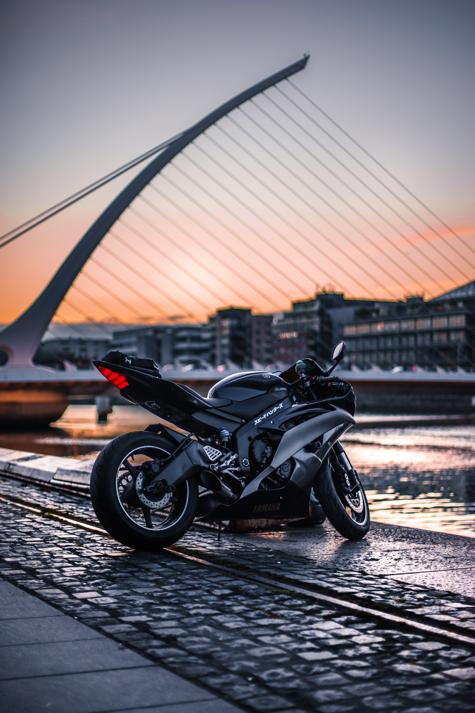

레플리카

경기용 바이크를 복제한 형태로 레이서 레플리카, 레플리카, R차라 불린다. 자동차로 치면 스포츠카라고 볼 수 있는데, 가장 인기 있는 1,000cc급 레플리카의 경우 페라리, 람보르기니 같은 슈퍼카에 필적하거나 능가하는 동력성능을 가지고 있다. 고성능을 발휘하지만 코너링을 절대적으로 우선시하기 때문에 뒷좌석 동승, 장거리 운행상황은 거의 고려되어 있지 않다. 경기용 머신이 기본인 만큼 보통 화려한 컬러와 그래픽으로 치장되어 있다. 레플리카를 한마디로 표현하면 ‘화려하고 가볍고 빠른 바이크’라고 할 수 있다.